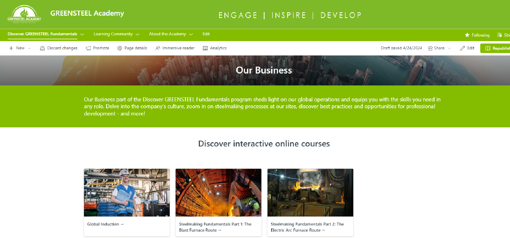
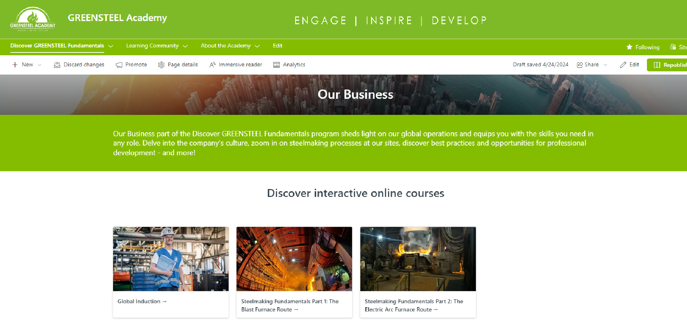

SharePoint Site
Take a look below the SharePoint site I have created.
 


GREENSTEEL Academy - SharePoint Site
I've developed a SharePoint site for GREENSTEEL Academy aimed at promoting courses and streamlining our new framework. Below, you'll find details about this site.
Problem
Liberty Steel Group operates with dispersed offices globally, each utilizing their own Learning Management System (LMS) and platform. There is a critical need to establish a centralized SharePoint site to serve as a unified platform for employees. This centralized platform aims to provide employees easy access to up-to-date information about the academy, including the latest news, available courses, and knowledge resources. Additionally, with the recent launch of our framework, it is essential to connect all employees through a central page to provide comprehensive information related to their learning and development initiatives.
-
Audience
All Liberty Steel Employees -
Languge
English -
Build Year
2024 -
Site Name
GREENSTEEL Academy
Solution
To address the challenges faced by Liberty Steel Group in managing dispersed learning and development resources, we propose the implementation of a centralized SharePoint site. This solution aims to streamline communication and access to critical information across all global offices.
My process
1. Wireframe
After consulting with the team, I have created a blueprint of the site. This insight enabled us to define the learning goal we wanted to achieve with the SharePoint site.
2. Prototype
I created a prototype to understand how our framework integrates into the menu and to visualize the design of our SharePoint page, including colors and graphics.
3. Pages and Sections
Pages and sections are crucial for this site, as we aim to present learners with numerous options in a creative manner.
4. Courses Integration
The next step involved designing the course structure. We focused on promoting learning materials, providing course descriptions, and including LMS links with language options. Additionally, we provided a link for those without access to an LMS.
5. Promotion and Communications
I ran a communication campaign by creating a newsletter and designing images for conference rooms to promote our SharePoint site.
6. Final Build
Finally, I launched the site and granted access to all employees.
Here's how the site I have structured
Menu
I incorporated our logo with the tagline at the top and implemented dropdown menu sections for multiple pages.
Landing Page
I have crafted a landing page for the site that showcases our framework alongside the latest news.
Learning Community Page
The key people who need access to this site during their onboarding are the new joiners. Therefore, I have created a separate section specifically for them, encompassing all relevant actions.
Webinars and Events Page
It's also crucial to display webinars and events so that users can stay informed about the latest trends, watch them live, and save the videos for later viewing.
Social Sites
We have a dedicated section on this site where employees can engage directly in conversations using Viva Engage.
Online Courses
Most importantly, display course details that align with our framework, allowing users to access courses based on their locations.
{kind=link}
{kind=link}
{kind=link}
{kind=link}
{kind=link}
{kind=link}
{kind=link}
{kind=link}
What People are Saying
“Our new SharePoint eLearning site has been instrumental in enhancing our training programs. It offers a comprehensive library of courses and resources that are accessible anytime, anywhere. It's incredibly user-friendly and has empowered our employees to learn at their own pace. Cudos to Asim for his amazing work.!”

Manager GFG Alliance - Anton Govorin
This SharePoint site has been invaluable for understanding academy's initiatives. Its creative design and user-friendly interface make navigation effortless. I'm now eager to replicate this success by implementing a similar SharePoint for IT courses, aimed at upskilling our employees.

Nikhil Chaturvedi - IT Global Head
It's user-friendly sharepoint site I have ever seen, this provides easy access to all learning and development information, and even allows me to view 360-degree footage of our plants and take courses directly from the platform. Truly an invaluable resource!

Pooja Gupta - HR
786asimhusain@gmail.com
Copyright © All rights reserved | Asim